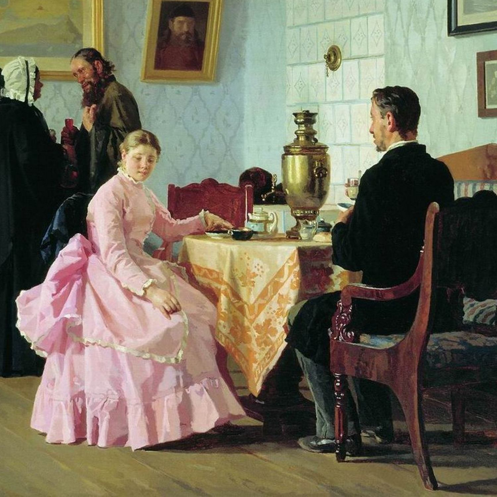

"Село Степанчиково и его обитатели" - это сатирическая повесть Фёдора Михайловича Достоевского, написанная в 1859 году и опубликованная в том же году в журнале "Время". Повесть является одним из первых произведений Достоевского, где он использует сатиру для критики русского общества, его моральных устоев и социальных проблем.
Повесть рассказывает о жизни в сельской усадьбе Степанчиково, где правит балом самодур и деспот, старый барин Фома Опискин. Он окружен своей семьей и прислугой, которые живут в страхе перед его характером и капризами. Фома Опискин - это типичный представитель "русского барина", который считает себя центром вселенной и не уважающий никого, кроме себя. В усадьбу приезжает молодой человек, Ефим Дростов, который становится жертвой тиранства Фомы Опискина. Ефим - человек добрый и наивный, он не может понять законы "степанчиковского общества" и постоянно становится жертвой интриг и издевательств. Он не может понять и принять логику Фомы Опискина, основанную на жестокости и эгоизме, что делает его уязвимым перед тиранством барина. Достоевский показывает мир Степанчиково как мир абсурда и нелепости. Он использует юмор, сатиру и иронию, чтобы высмеять пороки "степанчиковского общества", такие как деспотизм, эгоизм и невежество. Он показывает, как тиранство и бесчеловечность могут разрушить жизнь человека, как законы "степанчиковского общества", основанные на страхе и унижении, уничтожают любые попытки к честности и доброте. Но "Село Степанчиково" - это не просто сатира на русское общество. Достоевский затрагивает в ней глубокие философские вопросы о смысле жизни, о свободе и о том, как человек может сохранить свою личность в жестоком мире. Он заставляет нас задуматься о том, как важно оставаться честным и добрым даже в лице не справедливости и бесчеловечности, как важно сохранять в себе силу духа и не поддаваться искушению стать таким же жестоким и эгоистичным, как "степанчиковские обитатели".
Самодур и тиран: Фома Опискин - главный герой повести. Он - старый барин, владеющий усадьбой Степанчиково. Он самодур, деспот и тиран, он правит балом в своем мире и окружен страхом.
Русский барин:Фома Опискин - это типичный представитель "русского барина", который считает себя центром вселенной и не уважающий никого, кроме себя. Он беспрестанно издевается над Ефимом Дростовым, но в то же время он сам является жертвой своих собственных иллюзий и комплексов.
Нелепый и не осознающий своей жестокости: Фома Опискин - это человек, который не понимает, что он жесток и несправедлив. Он уверен, что все делает правильно, что он - "хозяин" и может делать все, что захочет.
Жертва своей собственной глупости: Фома Опискин - это не только тиран, но и жертва своей собственной глупости. Он живет в мире иллюзий, он не видит реальность, он не может понять, что он не такой умный и могущественный, как ему кажется.
Жертва тиранства: Ефим Дростов - молодой человек, который приезжает в Степанчиково. Он добрый и наивный, он не может понять законы "степанчиковского общества". Он становится жертвой тиранства Фомы Опискина, он постоянно подвергается издевательствам и унижениям.
Не может адаптироваться: Ефим - человек с добрым сердцем и честным характером. Он не может адаптироваться к "степанчиковской" реальности, где правила основаны на жестокости и эгоизме.
Символ невинности: Ефим - это символ невинности и доброты. Он показывает нам, что в мире "степанчиковских обитателей" нет места для честности и доброты.
"Свита" тирана: Семья Фомы Опискина - это "свита", которая поддерживает его тиранство. Они также являются жертвами его характера, но они не хотят отказаться от своего "хозяина" и от своего комфорта.
Не способные на свободу: Семейство Опискиных - это люди, которые боятся свободы. Они не хотят брать на себя ответственность за свою жизнь, они предпочитают жить в страхе и подчинении.
Противоречивая натура: В семье Фомы Опискина есть и "злые", и "добрые" персонажи. Но они все - жертвы своего "хозяина" и не могут изменить свою жизнь.
"Свита" Фомы Опискина: В "Селе Степанчиково" есть и другие обитатели, которые являются "свитой" Фомы Опискина: прислуга, крестьяне и другие "степанчиковские обитатели". Они все - жертвы его тирании и не могут жить свободно.
Символ "степанчиковского общества": Все обитатели Степанчиково - это символ "степанчиковского общества", мира, где не ценятся человечность, справедливость и доброта.
